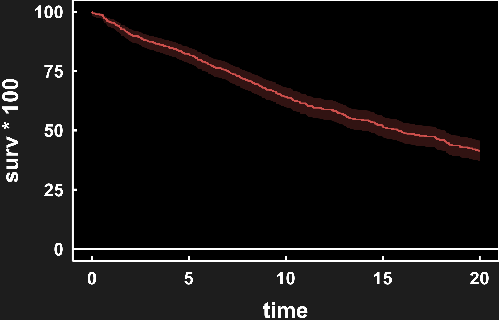
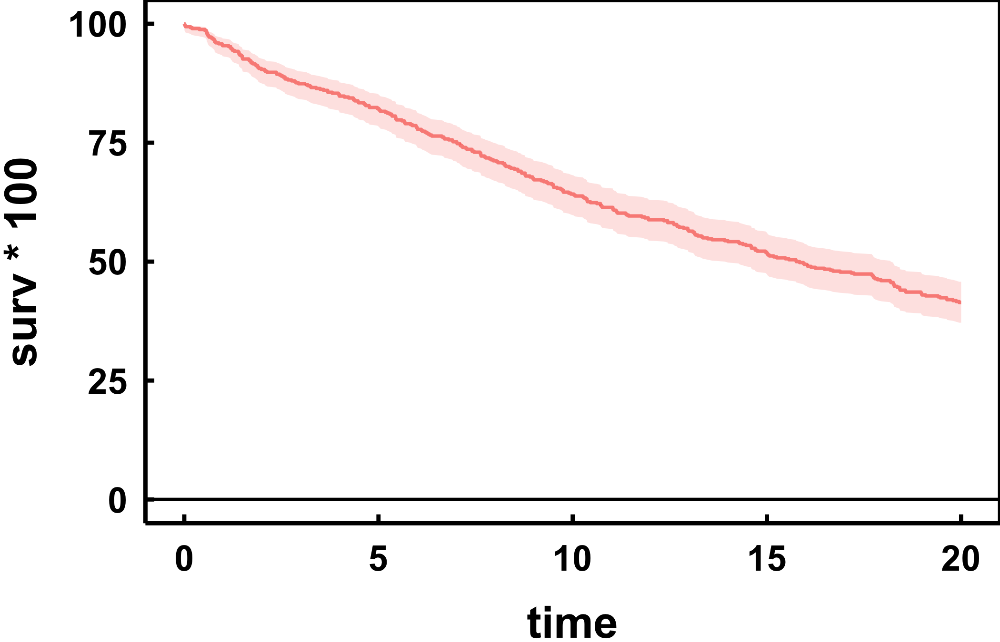
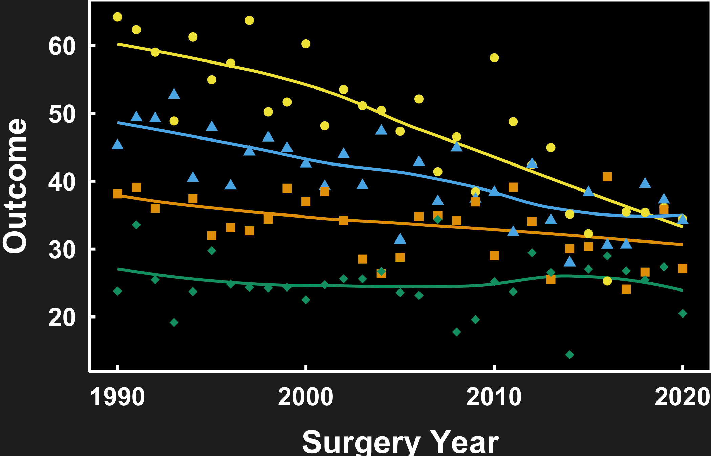
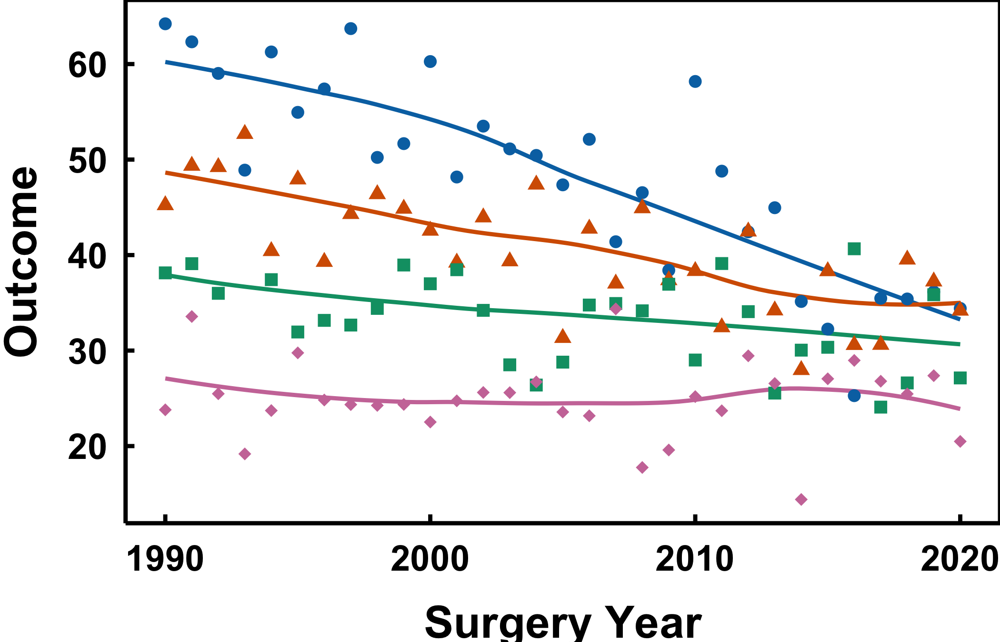

p <- plot(hv_survival(sample_survival_data(n = 500, seed = 42)))
p + theme_hv_ppt_dark(base_size = 18) +
theme(plot.background = element_rect(fill = "grey15", colour = NA))
A slide is read from across a room and sits on a coloured background, not white paper. Two things change from a manuscript figure. The type scales up the way a poster’s does, so it carries to the back of the room; and the theme has to match the deck: dark for a projected slide, light or transparent for a printed handout or a light template. hvtiPlotR ships a pair of PowerPoint themes for exactly this, plus save_ppt(), which drops the finished plot onto a slide as an editable vector graphic rather than a flat image.
theme_hv_ppt_dark() styles a plot for a projected deck: white ink, no gridlines, and a large base size so the figure reads from the back of the room. It deliberately leaves the figure background transparent so the slide’s own background shows through, which is what you want on a real deck, but it makes the white axis text vanish on this white page. For the preview below we add a dark plot.background to stand in for the slide; on the actual deck, drop that line and let save_ppt() place the transparent figure on the slide.
p <- plot(hv_survival(sample_survival_data(n = 500, seed = 42)))
p + theme_hv_ppt_dark(base_size = 18) +
theme(plot.background = element_rect(fill = "grey15", colour = NA))
theme_hv_ppt_light() is the same typography on a light or transparent background, for a printed handout or a light template.
p + theme_hv_ppt_light(base_size = 18)
Both themes default to a 32 pt Arial base, sized for a slide projected across a room. We drop base_size to 18 here so the figure previews legibly on the page; leave it at the default for the real deck, and raise it further for a large hall.
A theme cannot finish a grouped figure on its own. theme() governs the non-data ink, the text, panel, grid and ticks, and nothing that is drawn from the data. Add theme_hv_ppt_dark() to a four-group trends plot and you restyle the axes while leaving every series in ggplot2’s default hues. Series colour and shape live in the scales, so a finished slide figure is a theme call plus scale_colour_manual() plus scale_shape_manual().
Three lines is nothing once. On a twelve-figure deck it is thirty-six, and the cost is not the typing. It is that one figure drifts out of step with the rest, usually the one you added last and looked at least.
hv_ppt_series() bundles the three into a single object. It returns a plain list holding the theme and both scales, and ggplot2’s + unrolls a list element by element, so the bundle composes exactly the way a theme does. Define it once near the top of the script, then add that same object to every plot in the deck.
dta_trends <- sample_trends_data(n = 600, seed = 42)
p_trends <- plot(hv_trends(dta_trends))
ppt <- hv_ppt_series(mode = "dark", base_size = 18)
p_trends +
labs(x = "Surgery Year", y = "Outcome") +
ppt +
theme(plot.background = element_rect(fill = "grey15", colour = NA))
mode names the background the figure will sit on, and it picks both the theme and the colour ordering: "dark" wraps theme_hv_ppt_dark(), "light" wraps theme_hv_ppt_light(). Anything else you pass goes through to the wrapped theme, which is how base_size = 18 got there above. Leave the 32 pt default in place for a real deck.
Two arguments cover the cases where the defaults are wrong. Pass colours when a deck calls for a particular set, and shapes when the default glyphs collide with something else on the slide.
p_trends +
labs(x = "Surgery Year", y = "Outcome") +
hv_ppt_series(
mode = "light",
colours = c("#0072B2", "#D55E00", "#009E73", "#CC79A7"),
shapes = c(16, 17, 15, 18),
base_size = 18
)
Four values here for four groups. The defaults carry six of each, which is the ceiling for a grouping variable before a discrete scale runs out of values and errors. Ask hv_ppt_palette() for a seventh colour and it stops rather than recycling, on the reasoning that two series sharing a hue is worse than a stopped script.
Both scales map the same variable, so each series is told apart twice. On your monitor that looks like belt and braces. In the room it is not. A projector in a dim hall flattens colour differences that are perfectly clean on screen, and a black-and-white handout drops them altogether, but the point shapes survive both. This is the same redundancy the colour chapter argues for in a manuscript figure, and the case for it on a slide is stronger, not weaker.
The shape scale still earns its keep with no legend drawn. Where two curves cross, the plotted summary points are what tells them apart.
A finished CORR figure carries no legend, on a slide or on a journal page. theme_hv_ppt_dark() and theme_hv_ppt_light() both set legend.position = "none", and hv_ppt_series() deliberately leaves that alone. You name the groups on the panel instead, in the theme’s own ink. Section 37.4 has that recipe and the reasoning behind the ink.
If a working draft does want a key, pass legend.position straight through and give both scales a shared title, so ggplot2 merges them into one legend instead of stacking two:
hv_ppt_series(mode = "dark", legend.position = "top", name = "Group")A figure exported as a PNG is frozen: a reviewer who wants the title reworded or a colour swapped has to come back to you. save_ppt() instead writes the plot onto a slide as a native vector graphic, so its text, lines, and colours stay editable in PowerPoint itself. It anchors the plot in the panel rectangle of a house slide template, so every figure lands in the same place across a deck.
save_ppt(
p + theme_hv_ppt_dark(),
template = "RD-dark.pptx",
powerpoint = "survival_slide.pptx"
)The chunk is eval: false because it writes a binary .pptx. The code is shown, not executed during the book build. Pair the dark theme with a dark template and the light theme with a light one, and keep theme_hv_ppt_dark() at its 32 pt default here, since the template is laid out for that size. Pass panel_box to move or resize the plot rectangle, and slide_titles to set the slide heading.